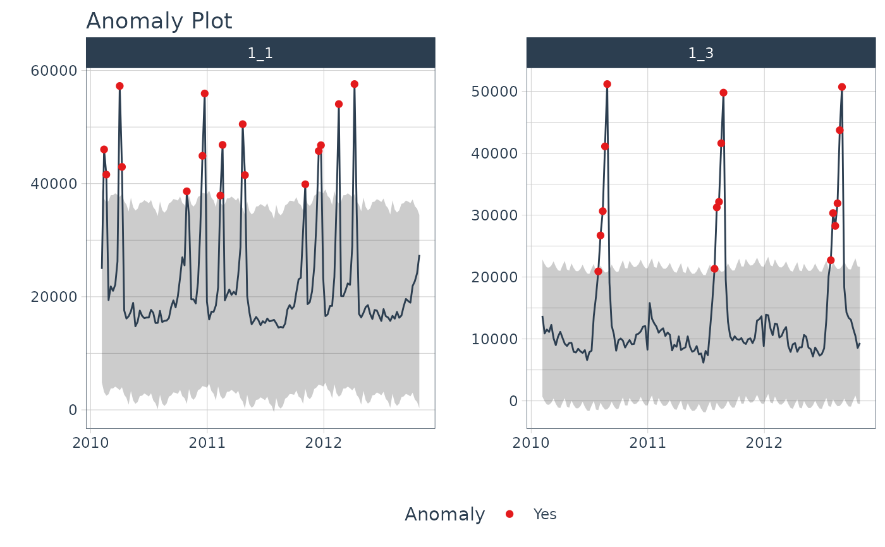
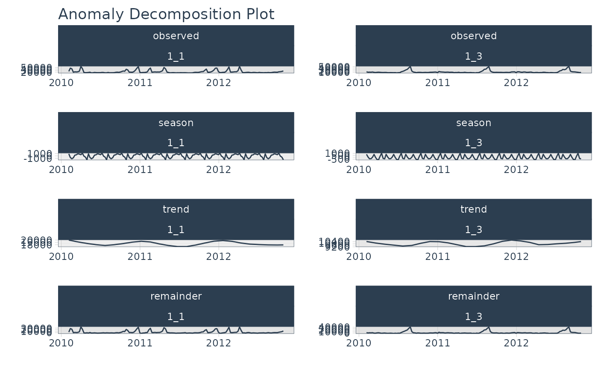
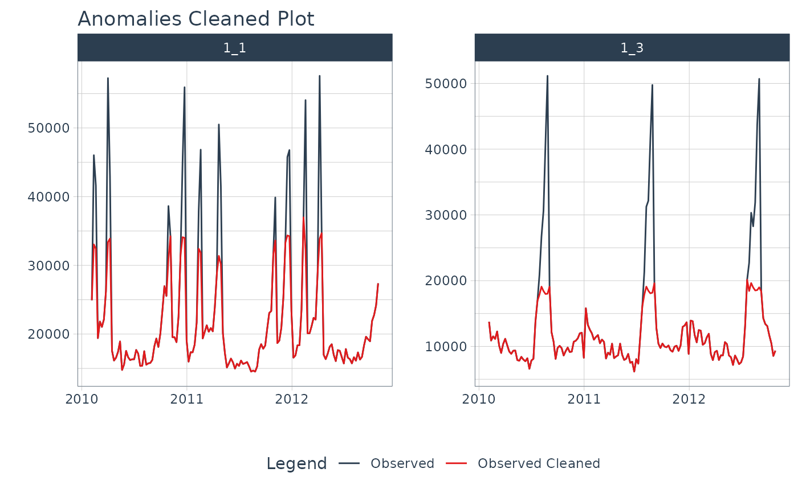

plot_anomalies() is an interactive and scalable function for visualizing anomalies in time series data.
Plots are available in interactive plotly (default) and static ggplot2 format.
plot_anomalies_decomp(): Takes in data from the anomalize()
function, and returns a plot of the anomaly decomposition. Useful for interpeting
how the anomalize() function is determining outliers from "remainder".
plot_anomalies_cleaned() helps users visualize the before/after of
cleaning anomalies.
Usage
plot_anomalies(
.data,
.date_var,
.facet_vars = NULL,
.facet_ncol = 1,
.facet_nrow = 1,
.facet_scales = "free",
.facet_dir = "h",
.facet_collapse = FALSE,
.facet_collapse_sep = " ",
.facet_strip_remove = FALSE,
.line_color = "#2c3e50",
.line_size = 0.5,
.line_type = 1,
.line_alpha = 1,
.anom_color = "#e31a1c",
.anom_alpha = 1,
.anom_size = 1.5,
.ribbon_fill = "grey20",
.ribbon_alpha = 0.2,
.legend_show = TRUE,
.title = "Anomaly Plot",
.x_lab = "",
.y_lab = "",
.color_lab = "Anomaly",
.interactive = TRUE,
.trelliscope = FALSE,
.trelliscope_params = list()
)
plot_anomalies_decomp(
.data,
.date_var,
.facet_vars = NULL,
.facet_scales = "free",
.line_color = "#2c3e50",
.line_size = 0.5,
.line_type = 1,
.line_alpha = 1,
.title = "Anomaly Decomposition Plot",
.x_lab = "",
.y_lab = "",
.interactive = TRUE
)
plot_anomalies_cleaned(
.data,
.date_var,
.facet_vars = NULL,
.facet_ncol = 1,
.facet_nrow = 1,
.facet_scales = "free",
.facet_dir = "h",
.facet_collapse = FALSE,
.facet_collapse_sep = " ",
.facet_strip_remove = FALSE,
.line_color = "#2c3e50",
.line_size = 0.5,
.line_type = 1,
.line_alpha = 1,
.cleaned_line_color = "#e31a1c",
.cleaned_line_size = 0.5,
.cleaned_line_type = 1,
.cleaned_line_alpha = 1,
.legend_show = TRUE,
.title = "Anomalies Cleaned Plot",
.x_lab = "",
.y_lab = "",
.color_lab = "Legend",
.interactive = TRUE,
.trelliscope = FALSE,
.trelliscope_params = list()
)Arguments
- .data
A
tibbleordata.framethat has been anomalized byanomalize()- .date_var
A column containing either date or date-time values
- .facet_vars
One or more grouping columns that broken out into
ggplot2facets. These can be selected usingtidyselect()helpers (e.gcontains()).- .facet_ncol
Number of facet columns.
- .facet_nrow
Number of facet rows (only used for
.trelliscope = TRUE)- .facet_scales
Control facet x & y-axis ranges. Options include "fixed", "free", "free_y", "free_x"
- .facet_dir
The direction of faceting ("h" for horizontal, "v" for vertical). Default is "h".
- .facet_collapse
Multiple facets included on one facet strip instead of multiple facet strips.
- .facet_collapse_sep
The separator used for collapsing facets.
- .facet_strip_remove
Whether or not to remove the strip and text label for each facet.
- .line_color
Line color.
- .line_size
Line size.
- .line_type
Line type.
- .line_alpha
Line alpha (opacity). Range: (0, 1).
- .anom_color
Color for the anomaly dots
- .anom_alpha
Opacity for the anomaly dots. Range: (0, 1).
- .anom_size
Size for the anomaly dots
- .ribbon_fill
Fill color for the acceptable range
- .ribbon_alpha
Fill opacity for the acceptable range. Range: (0, 1).
- .legend_show
Toggles on/off the Legend
- .title
Plot title.
- .x_lab
Plot x-axis label
- .y_lab
Plot y-axis label
- .color_lab
Plot label for the color legend
- .interactive
If TRUE, returns a
plotlyinteractive plot. If FALSE, returns a staticggplot2plot.- .trelliscope
Returns either a normal plot or a trelliscopejs plot (great for many time series) Must have
trelliscopejsinstalled.- .trelliscope_params
Pass parameters to the
trelliscopejs::facet_trelliscope()function as alist(). The only parameters that cannot be passed are:ncol: use.facet_ncolnrow: use.facet_nrowscales: usefacet_scalesas_plotly: use.interactive
- .cleaned_line_color
Line color.
- .cleaned_line_size
Line size.
- .cleaned_line_type
Line type.
- .cleaned_line_alpha
Line alpha (opacity). Range: (0, 1).
Examples
# Plot Anomalies
library(dplyr)
walmart_sales_weekly %>%
filter(id %in% c("1_1", "1_3")) %>%
group_by(id) %>%
anomalize(Date, Weekly_Sales) %>%
plot_anomalies(Date, .facet_ncol = 2, .ribbon_alpha = 0.25, .interactive = FALSE)
#> frequency = 13 observations per 1 quarter
#> trend = 52 observations per 1 year
#> frequency = 13 observations per 1 quarter
#> trend = 52 observations per 1 year

# Plot Anomalies Decomposition
library(dplyr)
walmart_sales_weekly %>%
filter(id %in% c("1_1", "1_3")) %>%
group_by(id) %>%
anomalize(Date, Weekly_Sales, .message = FALSE) %>%
plot_anomalies_decomp(Date, .interactive = FALSE)

# Plot Anomalies Cleaned
library(dplyr)
walmart_sales_weekly %>%
filter(id %in% c("1_1", "1_3")) %>%
group_by(id) %>%
anomalize(Date, Weekly_Sales, .message = FALSE) %>%
plot_anomalies_cleaned(Date, .facet_ncol = 2, .interactive = FALSE)
